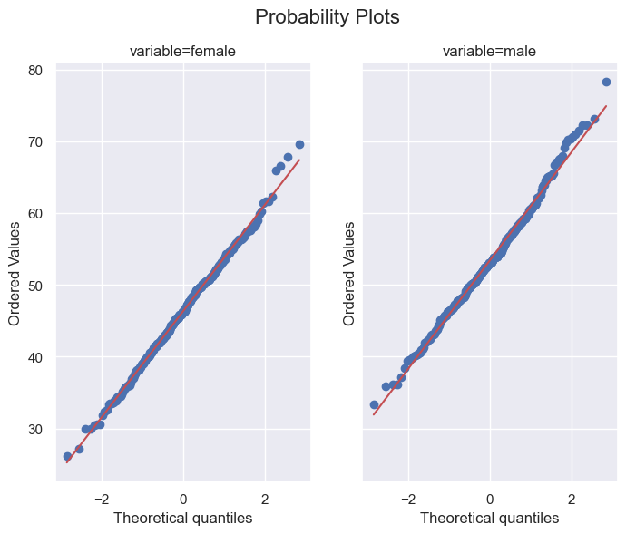

Z-Tests
Summary notes
How to perform a one-sample and two-sample \(z-\)tests of population means, and a \(z-\)test of a population proportion using scipy and statsmodels.
These topics were covered in M248, Units 8 and 9.
seaborn : 0.12.1
statsmodels: 0.13.2
matplotlib : 3.6.1
scipy : 1.9.3
pandas : 1.5.1
Test of population means
Data on the mean pass rate across all UK test centres during the period from April 2014 to March 2015 was obtained and analysed using an approximate normal model. (Data were taken from the Open University, who did not provide the primary source.)
Load the data.
pass_rates = pd.read_csv('https://raw.githubusercontent.com/ljk233/laughingrook-datasets/main/m248/pass_rates.csv') # noqa
pass_rates.info()<class 'pandas.core.frame.DataFrame'>
RangeIndex: 316 entries, 0 to 315
Data columns (total 4 columns):
# Column Non-Null Count Dtype
--- ------ -------------- -----
0 centre 316 non-null object
1 female 316 non-null float64
2 male 316 non-null float64
3 total 316 non-null float64
dtypes: float64(3), object(1)
memory usage: 10.0+ KBOne-sample \(z-\)test
In the year 2013/14, the mean pass rate for all learner drivers was 47.1%. Was the mean total pass rate in 2014/15 equal to that in 2013/14?
This is a test of the hypotheses,
\[ H_{0}: \mu_{2014} = 47.1\%; \hspace{2mm} H_{1}: \mu_{2014} \ne 47.1\%. \]
Inititialise an instance of DescrStatsW.
Return a 95% interval estimate of the mean total pass rate.
Check the normality of the data using a normal probability plot.
Perform a one-sample \(z\)-test.
Two-sample \(z-\)test
Was the mean pass rate of females equal to that of males?
This is a test of the hypotheses,
\[ H_{0}: \mu_{f} = \mu_{m}; \hspace{3mm} H_{1}: \mu_{f} \ne \mu_{m}. \]
Initialise two instances of DescrStatsW, one for each sample, and an instance of CompareMeans.
Return an interval estimate of the difference between the two pass rates.
Check the normality of both data.
f, axs = plt.subplots(1, 2, figsize=(8, 6), sharey=True)
f.suptitle('Probability Plots', fontsize=16)
# plot sample 1
st.probplot(x=df.data, plot=axs[0])
axs[0].set_title('variable=female')
# plot sample 2
st.probplot(x=dm.data, plot=axs[1])
axs[1].set_title('variable=male')
# plot the graphs
plt.show()
Perform a two-sample \(z\)-test.
Test of a proportion
Newborn babies are more likely to be male than female. A random sample found 13,173 males were born among 25,468 newborn children.
Is this sample evidence that the birth of males is more common than the birth of females in the entire population?
Test of Proportion (Statistics Online, Pennsylvania State University)
This is a test of the hypothesis,
\[ H_{0}: p_{m} = 0.5; \hspace{3mm} p_{m} > 0.5, \]
where \(p_{m}\) is the proportion of male births.
Declare and initialise x, n, where x is the number of male births and n is the sample size.
Return a 95% interval estimate of the proportion of male births.
Perform a one-sided z-test of a proportion.